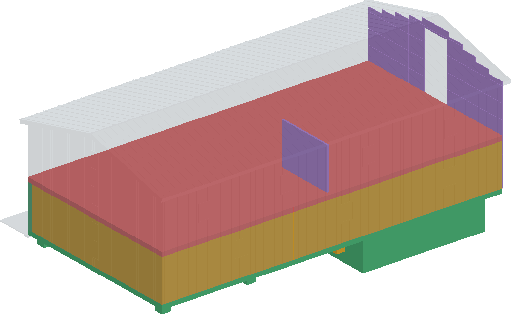

Der Fortschritt steckt in Rapporten, E-Mails und Excel, nicht im Modell.
Ist-Prozess heute
Befund im Snowdon-Original (IFC2X3)
IfcElement mit Installations- oder Abnahmedatumkein Pset_InstallationOccurrenceIfcTask / IfcWorkSchedulekein Terminplan im ModellJede Anforderung führt über eine Property und eine Regel zu einem Status pro Bauteil.
InstallationDate · IsInstalled · AcceptanceDatea1_baufortschritt.ids3 Regeln × 45 Bauteilklassen: vorhanden, Typ, FormatDrei Anforderungen
| # | Anforderung · Regel | Wer | Prüfung |
|---|---|---|---|
| 1 | Soll-Datum und Montagestatus Pflicht, YYYY-MM-DD, IfcBoolean | Modellautor, Polier | IDS |
| 2 | Abnahme plausibel nur wenn montiert, ≤ Prüfdatum | Bauleitung | IDS App |
| 3 | Verzug erkannt nicht montiert und Soll ≤ Prüfdatum | Bauleitung | App |
Statusableitung
| InstallationDate | IsInstalled | Acceptance | Status |
|---|---|---|---|
| Zukunft | FALSE | leer | geplant |
| ≤ Prüfdatum | FALSE | leer | überfällig |
| beliebig | TRUE | leer | ausstehend |
| beliebig | TRUE | gesetzt | abgenommen |
| leer / ungültig | oder Abnahme ohne Montage | Fehler | |
IFC2X3 kennt kein IfcDate: Daten als IfcLabel mit Pattern. IDS 1.0 prüft beim Entity-Facet keine Subtypen, darum stehen alle 45 Klassen in der Liste (erzeugt mit erzeuge_ids.js). IsInstalled ist projektspezifisch.
Zwei Modelle, jeder Befund belegt mit GlobalId.
Prüfdatum 03.11.2026 · grösster Verzug 6 Tage: 1KpZCW3Gn25x9tpICCoFrY IfcBeam

| Fehler | Wert im Modell | IDS | App |
|---|---|---|---|
| F1, F2 Wassertank | InstallationDate leer | ✓ | ✓ |
| F3 PV-Fassade | 24.11.2026 | ✓ | ✓ |
| F4 Stütze Korridor | 2026-09-31 | ✗ | ✓ |
| F5 Zimmerwand | IsInstalled als Text | ✓ | ✓ |
| F6 Hauseingangstür | Abnahme ohne Montage | ✗ | ✓ |
\d{4}-\d{2}-\d{2}, existiert aber nicht.ifctester 0.9.0 und ifclite 5.5.0 liefern dieselben Treffer · Reports in results/
Eine HTML-Datei, zwei Rollen. Die App schreibt direkt ins IFC, ohne CSV.
Soll-Prozess · ein Tag
IsInstalled = FALSE. IDS-Check bei der Übergabe.
IFC
Polier sieht, was heute fällig ist, meldet Montage mit einem Tipp, «Stand speichern».
IFC mit IsInstalled
Bauleitung öffnet das IFC, der Check läuft sofort. Vor Ort prüfen, abnehmen, speichern.
IFC mit AcceptanceDate
Bauherr erhält Fortschritt, Verzug und Pendenzen. ↺ nächster Tag
Demo Mutthornhütte · 03.11.2026
| Start | nach Polier | nach Bauleitung | |
|---|---|---|---|
| Montiert | 33 | 37 | 37 |
| Überfällig | 4 | 0 | 0 |
| Ausstehend | 12 | 16 | 0 |
| Abgenommen | 20 | 20 | 36 |
Was steht, wie geprüft
IsInstalled, Bauleitung AcceptanceDate und korrigiert Datenfehlerbaufortschritt.jsZwei IFC-Stände im Umlauf: Meldungen gehen verloren.
Die neuere Datei der Bauleitung enthält die 4 Montagen von Polier A nicht.
Ursache: Variante A hat keinen Server. Jedes «Stand speichern» erzeugt eine neue Datei, und die App merkt nicht, ob jemand anderes inzwischen gespeichert hat.
Massnahme im MVP
Zielbild · Variante B mit Server
- Statustabelle pro GlobalId:
isInstalled,acceptanceDate, wer, wann - Ein Stand für alle, echtes Login
- Nebeneffekt: Ist-Datum der Montage
- IFC-Export auf Knopfdruck